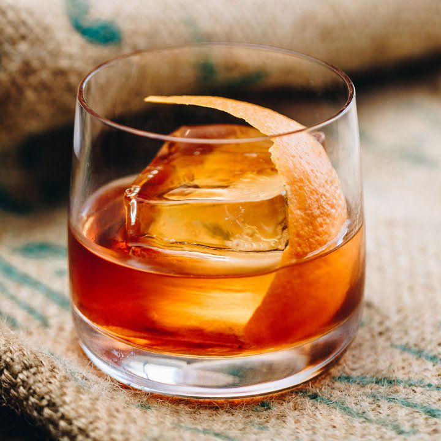

Old Fashioned Recipe

If there's one cocktail everyone should know how to make, it's the Old
Fashioned, one of my all-time favorites alongside the Daiquiri and
Manhattan.
Ingredients
- 2oz rye or bourbon
- 1tsp demerara syrup
- 2 dashes Angostura bitters
- 1 dash orange bitters
- 4-5 drops baking spice bitters
- lemon and orange peel for garnish
Steps
-
In a chilled mixing glass, combine the whiskey, sugar, and bitters.
- Fill it with ice and stir for 18-25 seconds.
-
Strain the cocktail into a chilled rocks glass over ice - preferably one
large cube.
-
Express the oils of the lemon and orange peels and add them into the
glass.